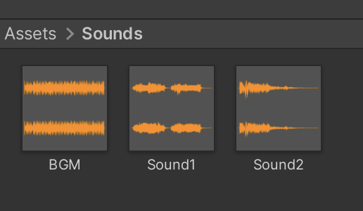
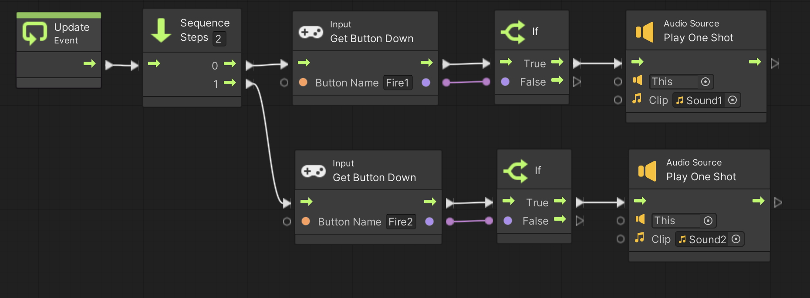
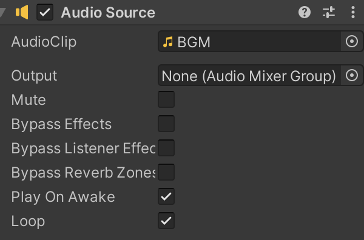

ここでは効果音やBGMを鳴らしてみたいと思います。
演習を行う前に準備をしましょう。
アセットフォルダの Scenes フォルダの中にシーンを新規作成し、シーン名を「Sound Scene」にする。背景色は任意で構わない
新規作成したシーンへ移動する
ヒエラルキー右クリック → Create Empty で GameObject というゲームオブジェクトを新規作成し、名前を「PROGRAM」にする (Position は適当で良いです)
次にこちらを参考にして Visual Scripting のセットアップもします。
Scripts フォルダの中に入り、空いている部分を右クリックしてメニューを表示し、Create → Visual Scripting → Script Graph を選ぶ
Scripts フォルダ内に「New Script Graph」というアセットが出来るので「Sound Script」に名前を変更する
PROGRAM に Script Machine コンポーネントをアタッチする
Script Machine の Graph の None と書いてあるセルに Sound Script をドロップする
効果音やBGMを鳴らす前にサウンドファイルを用意する必要があります。
Web で検索し、爆発とかレーザー音みたいに効果音として適当なサウンドファイルを 2 つ用意して下さい。
また BGM として使うサウンドファイルを 1 つ用意して下さい。
ファイル形式は Wave か MP3 が無難だと思います。
サウンドファイルを 3 つ用意したら、以下の手順で Unity にアセットとして取り込みます
OS のファイラ(エクスプローラや Finder など)でサウンドファイルのあるフォルダを開く
Unity エディタのアセットフォルダの空いている部分を右クリックしてメニューを表示し、Create → Folder でフォルダを新規作成し、「Sounds」という名前に変更する
Sounds フォルダの中に入り、１つ目のファイルをドラッグ＆ドロップする
名前を「Sound1」に変更する
同様に 2 つ目のファイルも Unity に取り込んで「Sound2」に名前を変更する
同様に BGM 用のファイルも Unity に取り込んで「BGM」に名前を変更する
ここまでで Sounds フォルダが図 1 の様な画面になっていればOKです。
図1. サウンドファイルの取り込み

効果音を鳴らすためには Audio Source コンポーネントを PROGRAM にアタッチし、Audio Source Play One Shot ユニットを使います。
例えば図 2 のスクリプトを実行して下さい。
Fire1 ボタンを押すと Sound1 が、Fire2 ボタンを押すと Sound2 が鳴ります。
なお Audio Source Play One Shot ユニットの Clip の欄に Sounds フォルダから Sound1 と Sound2 をドロップしてから実行して下さい。
図2. 効果音を鳴らすスクリプト

BGM に関しては Audio Source コンポーネントに再生を丸投げした方が楽です。
以下の手順で設定し、実行ボタンを押すと BGM が再生されます。
ヒエラルキーの PROGRAM をクリックしてインスペクタを表示する
Audio Source コンポーネントの AudioClip の None と書いてある欄に Sounds フォルダにある BGM をドラッグ＆ドロップする
Loop をチェックする。すると BGM がループ再生される
上の設定後の Audio Source コンポーネントは次のようになります。
図3. Audio Source コンポーネントで BGM を鳴らす
